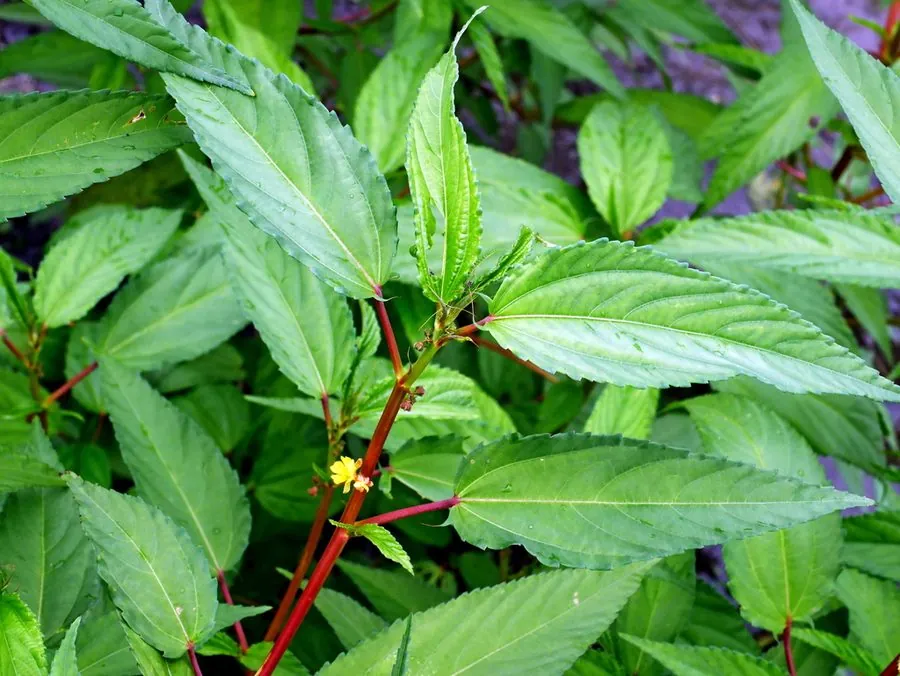

农作物与经济植物 · 植物界
黄麻 Corchorus capsularis

锦葵科一年生草本，茎皮纤维细长柔韧，是麻袋、绳索的传统原料，原产南亚，曾被誉为“金色纤维”。
- 分类
- 门被子植物门纲木兰纲目锦葵目科锦葵科属黄麻属
- 栖息环境
- 高温多湿的冲积平原、河漫滩，喜光、需水量大
- 地理分布
- 原产南亚与东南亚，孟加拉国、印度为主产国，中国长江以南有栽培
- 保护级别
- 暂无评估；栽培作物，种植面积随市场需求波动
物种志
黄麻为锦葵科黄麻属一年生草本，株高 2–3 米，茎直立，圆柱形，少分枝。叶互生，披针形至卵形，边缘有锯齿，基部两侧各有一枚细长的锯齿状附属物。花小，黄色，单生或数朵簇生于叶腋，花期 6–8 月；蒴果球形，有纵棱，成熟时开裂，种子细小。
黄麻原产南亚与东南亚，孟加拉国与印度是主产区，中国长江以南也有栽培。其茎皮富含纤维素，剥取后经沤麻、漂洗、梳理即成黄麻纤维，可织麻袋、麻布、地毯底布与绳索，因色泽金黄、吸湿透气而被称为“金色纤维”。栽培喜高温多湿、阳光充足，多种于河流冲积平原，生长期需充足水分；采收时齐地割茎，浸水沤制后剥皮。随着合成纤维普及，黄麻转向环保包装与复合材料领域。
形态与习性
- 原产地南亚与东南亚，孟加拉国为主要产区
- 株高2–3 米，茎直立少分枝
- 纤维茎皮纤维金黄柔韧，可织麻袋绳索
- 生育期一年生，花期 6–8 月，生长期约 4 个月
- 栽培喜高温多湿，种于冲积平原，需水量大
- 采收齐地割茎，浸水沤麻后剥取纤维
趣味知识
- 黄麻纤维色泽金黄、吸湿透气，曾被称为“金色纤维”，是麻袋与地毯底布的传统原料。
- 它的叶片基部两侧各有一枚细长锯齿状附属物，是识别黄麻的直观特征。
- 沤麻是利用微生物分解果胶、使纤维与茎秆分离的过程，水质与温度直接影响纤维品质。
- 在塑料污染治理背景下，黄麻布袋与复合材料重新受到关注。